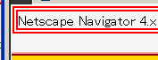
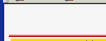

head要素とhead要素の子孫要素のdisplayプロパティがnoneから変更できない。
<head>
<title>Internet Explorer (Windows) CSSバグリスト</title>
<style type="text/css">
head, title {
display: block;
visibility: visible;
margin: 2px;
border: 2px solid red;
}
</style>
</head>
head要素とtitle要素をブロックボックス化しています。念のためvisibilityプロパティも指定しました。
ページ左上端のスクリーンショットです。
Moz1.0.2での表示
NN4.8での表示
「全称セレクタに対してdisplayプロパティを変更するとtitle要素の内容物が表示されてしまう」というバグ報告から、「displayプロパティを変更しても表示できない」というバグに転換しています。
NN4.8で不具合の発生が確認されました。